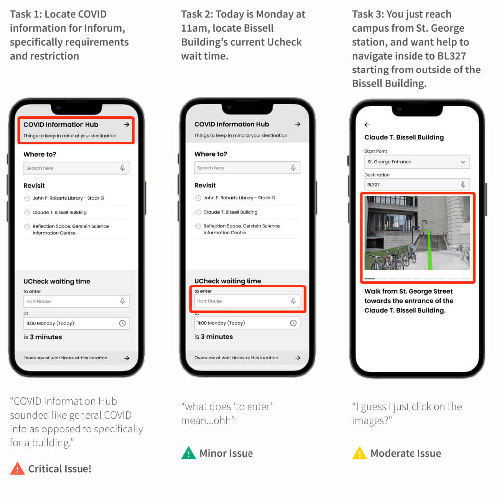

App UX DEsign
UNavigate
As universities around the world open up to in-person activities, students find it increasingly difficult to navigate their campus due to constantly changing COVID protocols being enforced.
The solution
An app that U of T students can use to easily stay up to date with relevant COVID protocols in effect and have a predictable experience navigating the campus.
Context
This project was done in collaboration with UofT's Student Life Innovation Hub as a course project. We followed IBM's design activation journey to guide our process.
Our team of 5 worked on this project from September 2021 - December 2021
my contributions
Quantitative analysis of primary research data
Rapid ideation to come up with potential solutions
Lo-Fi and Mid-Fi prototyping
Analysis of usability test data
Design slide decks for bi-weekly playback presentations
Storyboarding, Direction, Editing for promo video
The process
Secondary Research
We explored the problem in depth by analysing existing sources such as articles and forum discussions. Looking at existing solutions gave us an idea of what works, what doesn't, and why.
MAIN FINDINGS
Students express frustrations surrounding access to buildings, ambiguous protocols, and way-finding. The official campus map for UofT had not been adapted to COVID protocols and there was no information about open and closed entrances and spaces.
"For me, eating lunch nowadays involves sitting on the grass by a random sidewalk since all the benched and tables outside are taken :') "
- Student on r/UofT
Primary Research
We wanted to know how the students were accessing COVID protocol information, and how they were navigating the campus while these protocols were in place.
Data Analysis
In total, we received 50 valid survey responses and interviewed 11 campus-going students during our primary research. I was responsible for cleaning and analysing the survey data. The team then used affinity diagrams to identify themes and patterns in the qualitative data gathered.
MAIN FINDINGS
Most respondents were graduate students from UofT's St.George campus.
Students express frustrations surrounding long lines and slow entry process at UCheck stations.
Students are feeling confused navigating the campus and entering buildings
Developing Empathy
MEET SHEA!
We created a fictional persona named Shea who fits the demographic of our representative users. We then proceeded to polish this persona by identifying her desires, needs, and obstacles.
EMPATHISING
People respond to situations in more ways than one. We created an empathy map highlighting what the user says, does, thinks, and feels throughout the process.
As-Is Scenario
Understanding the user's journey through the problem scenario in a temporal fashion helped us identify areas of opportunity through an anonymous voting session. Each team member assigned limited votes to pain points that were most prominent and impactful in their opinion.
PROMINENT PAIN-POINTS
Looking up covid protocol information from multiple sources.
Finding building entrances.
Slow access to UCheck status and the resulting delay caused to other students in queue.
Unclear and ambiguous way-finding inside UofT buildings complicated due to COVID protocols.
Needs Statements
GOAL
To converge on to the most refined formulation of the problem and provide a springboard for subsequent ideation.
INDIVIDUAL BRAINSTORMING
Exploring the highlighted pain-points and identifying action-benefit pairs in isolation from other team members. This increases the likelihood of arriving at unique formulations and helps retain a balanced team dynamic.
CONVERGENCE
The team then discussed similar ideas to converge onto well formulated iterations of these needs statements that convey the essential core needs of the user.
Shea needs a way to know how to navigate UofT buildings so that she can easily find the right entrances.
Shea needs a way to understand where she can spend time on campus (following COVID protocols) so that she can feel like she is part of the community.
Shea needs a way to efficiently locate the most up to date COVID protocol information so that she can explore the campus in an informed way.
Shea needs a way to check availability of all kinds of services so that she can complete activities on campus.
Shea needs a way to quickly and easily move through the UCheck process so that she can reach class on time.
Big Ideas + Prioritisation
NO IDEA IS USELESS!
Each team member comes up with as many ideas as they can come up with in a limited amount of time with no regard for feasibility or impact. At this point, we preferred quantity over quality.
VOTING
After a brief introduction to all ideas, the team members anonymously voted on the feasibility and potential impact of each idea cluster.
PRIORITISATION
The idea clusters were then plotted on a prioritisation grid based on their number of votes to help us easily compare them and decide on ideas that we wanted to move forward with.
To-be Scenario
GOAL
To envision the future of our persona's journey as they go through the same process of planning and navigating the campus.
FOCUS
The To-be scenario helps us make sure that we tackled all the areas of opportunities and pain-points that we identified in the As-is scenario.
Team Alignment
HILLS
Who, What, Wow. Focusing on these three aspects, we came up with human-centred statements of intent to define the scope and outcomes for the entire team.
Shea the UofT student can find and understand the latest university COVID protocols to verify that she is following them in under a minute.
Shea the UofT student can plan for and arrive on time for class consistently despite unpredictable UCheck wait times.
Shea the UofT student can navigate between and within buildings with no blocks, reroutes and surprises.
Sequential Storyboard
Goal
To step by step visualise the persona's actions as they progress through tasks.
THE PROCESS
Members of the team collaborated in pairs to flesh out implementations of the big ideas through low-fi screens. Iterating through this process as a team, we were able to visualise the flow of the app alongside inputs required from the user and their expectations for the output at each screen.
NARRATIVE
Description of our persona's actions throughout the storyboard gives a detailed structure to the envisioned to-be scenario.
Lo-Fi Prototype + Initial Testing
We used balsamiq to create a lo-fi clickable prototype. Team members then used this prototype to conduct formative guerrilla testing to identify major surface-level usability concerns.
GUERRILLA TESTING
In total 4 UofT students aged 23-36 were asked to complete three tasks aligning with our hills and to communicate their though process to the testers by thinking aloud.
POSITIVE FEEDBACK
Participants worked through the task to find "room BL224" smoothly and appreciated the photos supporting visual directions.
ISSUES IDENTIFIED
Labelling: 3/4 participants didn't perceive "COVID info hub" as a button but as a news update.
Labelling: 4/4 participants found the labels "Directions" and "Go Inside" ambiguous.
Identifying entrances: 3/4 participants had trouble picking the entrance they used because they didn't know its name and the map didn't provide enough assistance.
Mid-Fi Prototype + Evaluation
I used Figma to create a clickable prototype of the app for our second evaluation. The purpose of this prototype was to emulate a working product with accurate layout, fonts, and functional images. The user was expected to explore the prototype to complete tasks. We also made minor changes as our own understanding of usability heuristics developed.
View Prototype
SUMMATIVE EVALUATION
The purpose of our second evaluation was to identify and categorising usability issues. Additionally, we also wanted to know what users thought about the app, especially if they would like to use such a product.
CATEGORISING ISSUES
Based on the potential of fault(s) that an issue can cause, also taking into account its prevalence, we categorised them into Minor, Moderate, and Critical issues.

Showcase + Next Steps
Watch how UNavigate changes Shea's student experience on campus!
HIGH-LEVEL VALUE PROPOSITION
We designed our app to help users easily navigate through the campus and plan for otherwise unexpected situations throughout the journey. However, we would like to further focus on the overarching goal of our design - to reduce stress and anxiety from this process.
BUILDING TRUST
Making the user aware of how the app calculates expected wait times, how often it is updated, and how confident the estimates are.
BRIDGING GAPS BETWEEN DEPARTMENTS
Most UofT departments operate in silos, rarely communicating with each other. Therefore it will be a challenge accessing data for our backend.
Learnings
TRUST THE PROCESS
It is not important to get things right the first time around, great ideas can emerge from anywhere and everywhere! Iteration results in quicker progress.
THE BIG PICTURE
It is easy to get bogged down in the details. Keeping the bigger picture in mind, specifically the value that we want to deliver to the user, makes it easier to navigate the process.
I AM NOT THE USER
Empathy requires practice, and so does letting go of our "excellent" ideas.